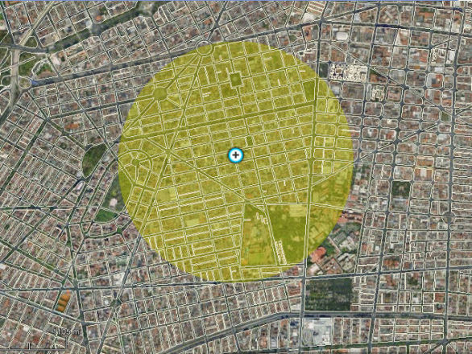
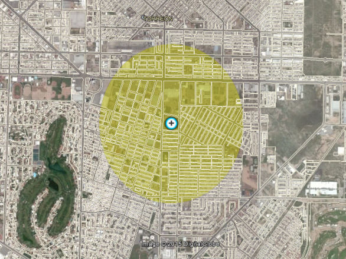

Alumnos por docente, indicador clave para la mejora de la educación. Segunda parte.
En esta segunda parte se repite el ejercicio anterior con la finalidad de determinar si se cumple la premisa que dice: a menor cantidad de alumnos por maestro, mejor educación. Tomando como parámetro el ranking 2013-2014 de Mejora tu Escuela.
Mejora tu escuela es un proyecto elaborado por el Instituto Mexicano para la Competitividad en el cual, basándose en los resultados de la prueba ENLACE para la educación primaria, genera un semáforo educativo (excelente, bien, de panzazo y reprobado) y un ranking anual. A continuación se muestra el ranking de las escuelas que presentaron la prueba en el estado de Coahuila y el indicador de alumnos por maestro, para posteriormente analizar las estadísticas obtenidas para el municipio de Torreón.
Top 10 Mejora tu Escuela en Coahuila
| Posición | Mantenimiento | Ubicación | Nombre | Alumnos por docente | Ámbito |
|---|---|---|---|---|---|
| 1 | Privada | Castaños | Inmagusa | 17.350 | rural |
| 2 | Pública | Acuña | Club Rotario | 31.000 | urbana |
| 3 | Privada | Sabinas | Colegio Modelo | 16.540 | urbana |
| 4 | Privada | Torreón | Cervantes | 18.360 | urbana |
| 5 | Privada | Sabinas | Montessori | 10.400 | urbana |
| 6 | Pública | Sabinas | Club de Leones | 19.360 | urbana |
| 7 | Privada | Ramos Arizpe | Cosmo | 9.750 | urbana |
| 8 | Privada | Saltillo | Liceo Freinet | 16.430 | urbana |
| 9 | Pública | Sabinas | Venustiano Carranza | 21.000 | rural |
| 10 | Privada | Torreón | Col. San Luis | 24.160 | urbana |
| Promedio de alumnos por docentes | 18.435 |
De las diez escuelas mejor rankeadas en el estado, siete son de financiamiento privado y tres de recursos públicos, a la inversa del ranking nacional, en donde siete son públicas y tres privadas. El 40% se ubican en el municipio de Sabinas, un 20% en Torreón, y el resto en partes iguales en Saltillo, Ramos Arizpe, Acuña y Castaños. Ocho se encuentran en zonas urbanas y dos en rurales.
El promedio de alumnos por maestro coincide con el dato de los primeros diez nacionales: 18.4
Destaca la escuela que ocupa el primer lugar, al ser un instituto financiado con recursos privados, pero ubicada en una zona rural, la escuela Inmagusa, del municipio de Castaños con 17.4 alumnos por maestro, cifra por debajo del indicador de Corea del Sur (17.9 en 2012).
Otro dato que otorga elementos para profundizar el análisis surge al separar las escuelas por tipo de financiamiento:
En Coahuila, las siete escuelas privadas cuentan en promedio con 16.1 alumnos por maestro (con un rango entre 9.75 a 24.6 alumnos), mientras que las públicas con 23.8(con rango entre 19.4 a 31 alumnos). A nivel nacional; de las tres privadas en el top 10, promedian 23.4 alumnos y en las tres públicas restantes promedian 16.3.
Top 10 Mejora tu Escuela en Torreón
| Posición | Mantenimiento | Ubicación | Nombre | Alumnos por docente | Ámbito |
|---|---|---|---|---|---|
| 1 | Privada | Torreón | Cervantes | 18.360 | urbana |
| 2 | Privada | Torreón | Col. San Luis | 24.160 | urbana |
| 3 | Privada | Torreón | C.E. María Montessori | 11.830 | urbana |
| 4 | Privada | Torreón | Colegio Alemán | 43.250 | urbana |
| 5 | Privada | Torreón | Prof. Eliseo Mendoza Berrueto | 20.830 | urbana |
| 6 | Privada | Torreón | Colegio Americano Torreón | 51.180 | urbana |
| 7 | Privada | Torreón | Nueva Laguna | 43.660 | urbana |
| 8 | Privada | Torreón | Fco. De Toledo | 31.330 | urbana |
| 9 | Privada | Torreón | Colegio Torreón | 11.830 | urbana |
| 10 | Pública | Torreón | González Ortega | 26.830 | urbana |
| Promedio de alumnos por docentes | 25.643 |
El promedio de alumnos por docente para las diez escuelas torreonenses mejor ubicadas en el ranking se encuentra 18.1% por encima del promedio del top 10 de Coahuila y del país. 25.6 alumnos por docente en Torreón contra 18.4 de las top 10 de Coahuila y de México.
Destaca el hecho de que las escuelas del ranking para Torreón se encuentran en el área urbana y considerando el promedio del indicador para escuelas en zonas urbanas del top 10 nacional y estatal (23.4 y 18.25 respectivamente) se encuentra por encima en el comparativo. El Colegio Cervantes (18.4) se encuentra entre los primeros cinco del Estado, con un dato igual al promedio del top 10 estatal de 18.4 alumnos por cada docente frente a grupo. El Colegio San Luis, consiguió entrar al top 10 estatal, con el indicador ligeramente inferior al promedio de los top 10 de Torreón.
Encontramos una relación entre la cantidad de alumnos que un maestro atiende y la ubicación en el ranking, aunque se debe de considerar a los factores que hacen que el número aumente o disminuya, entre estos factores es la ubicación de la escuela en zonas densamente pobladas. La escuela Niños de México en Ciudad de México cuenta con 34.3 alumnos por maestro, la mejor escuela primaria posicionada en el ranking nacional durante el ciclo 2013-2014.
Niños de México se ubica en un sector de la Ciudad de México en donde un análisis alrededor de la ubicación del plantel arroja que dentro de un radio de 1 kilómetro habitan 40,860 personas. El Colegio Cervantes, con su dato de 18.36 alumnos por docente, se ubica en un sector de la ciudad de Torreón con 28,852 habitantes en un radio de un kilómetro alrededor del plantel ubicado en la Calzada Vasconcelos. Por lo que hipotéticamente el Colegio Cervantes podría aumentar a 24.2 alumnos por docente sin que afecte su desempeño en el ranking, de acuerdo al comparativo con Niños de México entre el indicador, la ubicación y la población.
Institución: Niños de México (Primaria)

- Ubicación: Urbano. Zacatecas 154, Cuauhtémoc, México, D.F.
- Financiamiento: Privado
- Ranking: 1er nacional
- Alumnos por docente: 34.28
- Población en polígono: 40,860 hab.
Inventario Nacional de Vivienda. INEGI 2010.
Institución: Colegio Cervantes (Primaria)

- Ubicación: Urbano. Vasconcelos 545, Torreón, Coahuila.
- Financiamiento: Privado
- Ranking: 1er Torreón, 4to. Coahuila
- Alumnos por docente: 18.36
- Población en polígono: 28,852 hab.
Inventario Nacional de Vivienda. INEGI 2010.
Compilación de datos
| Grupo | Alumnos por docente | Ubicación: Urbana | Ubicación: Rural | Financiamiento: Privado | Financiamiento: Público | Año: |
|---|---|---|---|---|---|---|
| Top10 Nacional | 18.4 | 30% | 70% | 30% | 70% | 2014 |
| Top10 Coahuila | 18.4 | 80% | 20% | 70% | 30% | 2014 |
| Top10 Torreón | 25.6 | 100% | 0% | 90% | 10% | 2014 |
| Corea del Sur | 17.9 | ND | ND | ND | ND | 2012 |